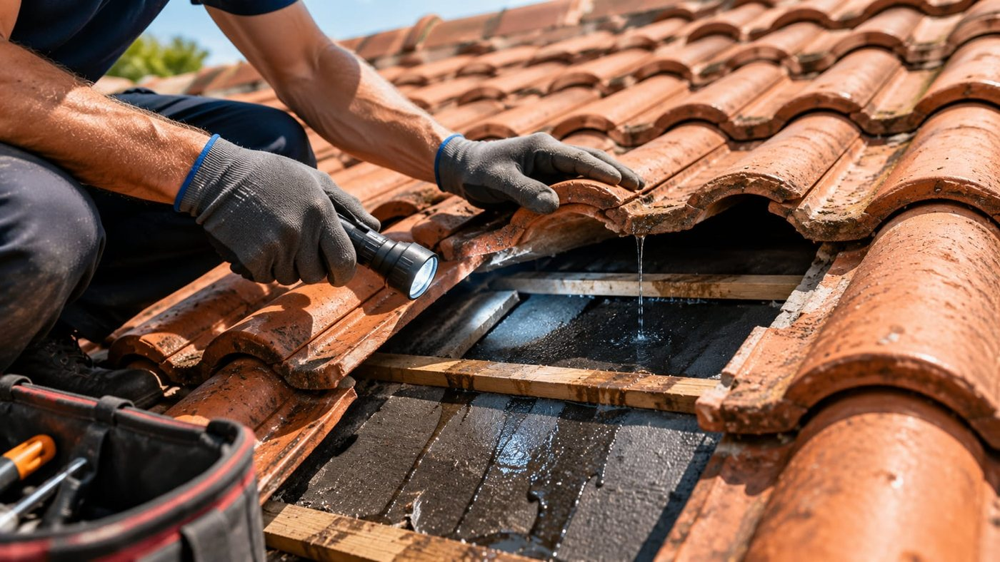
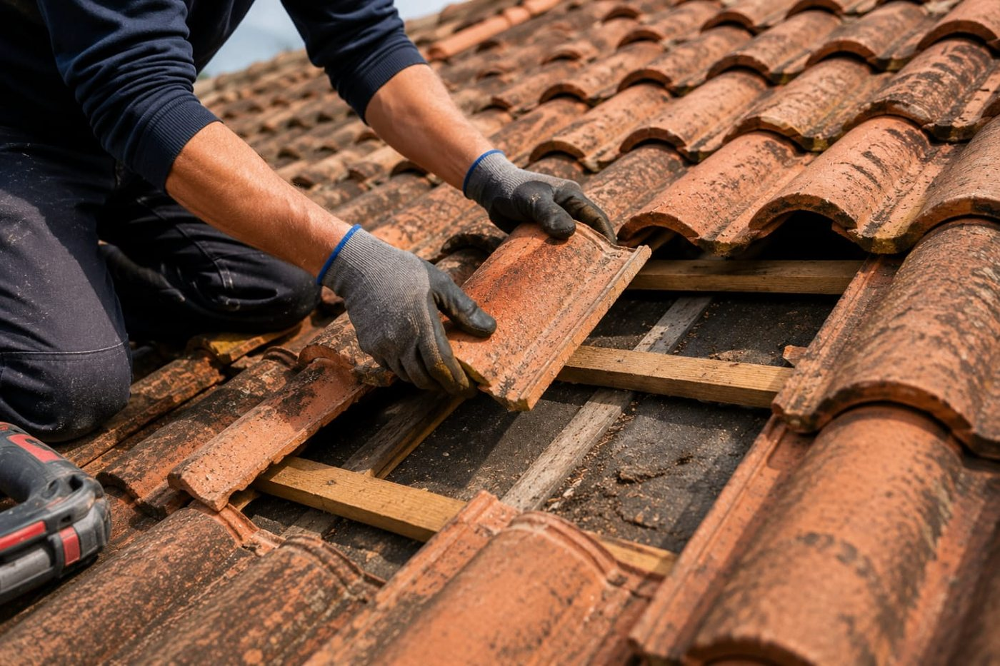
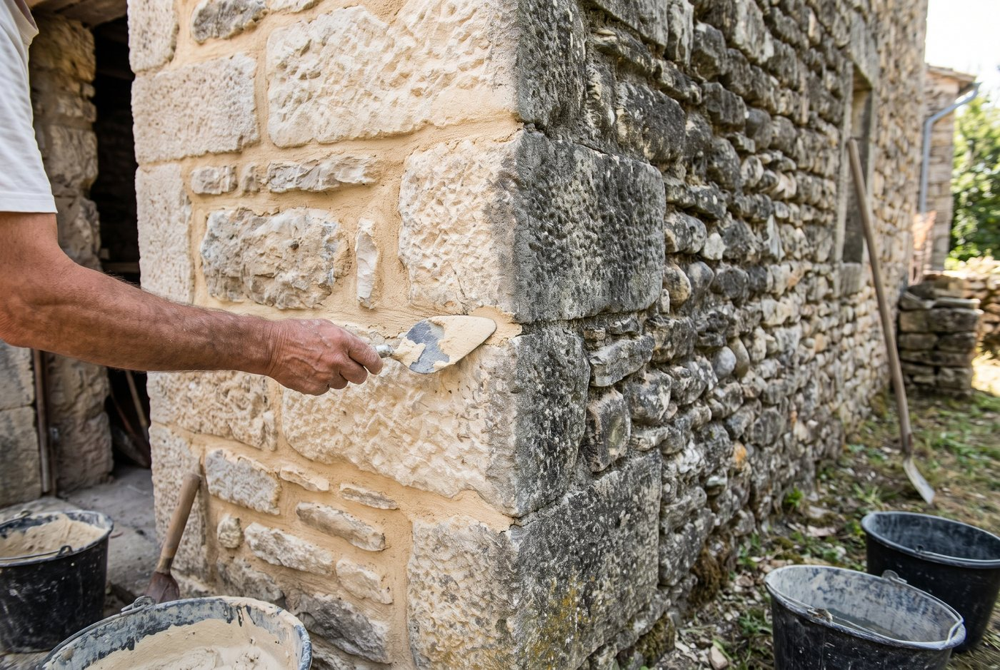
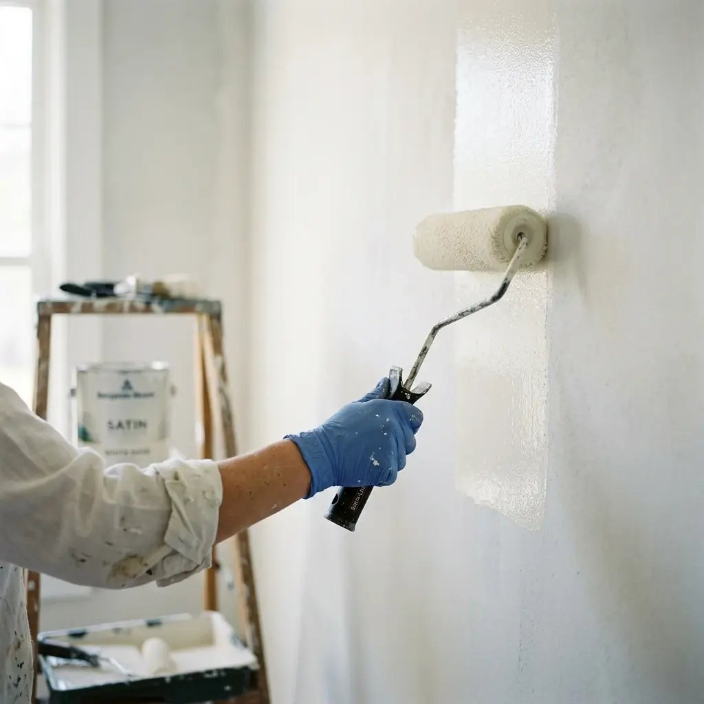
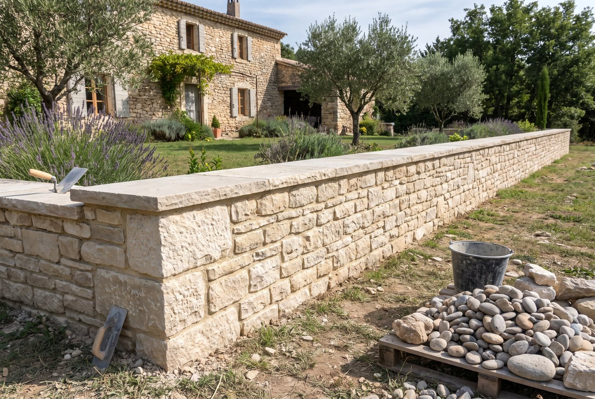
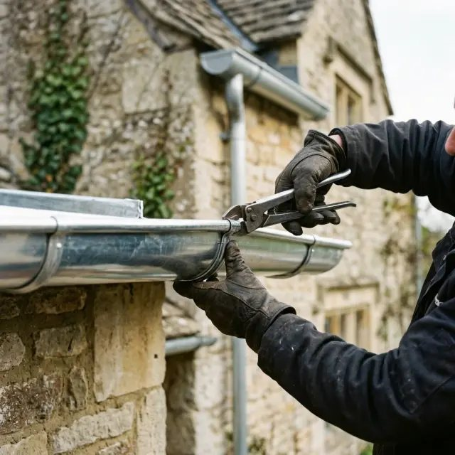
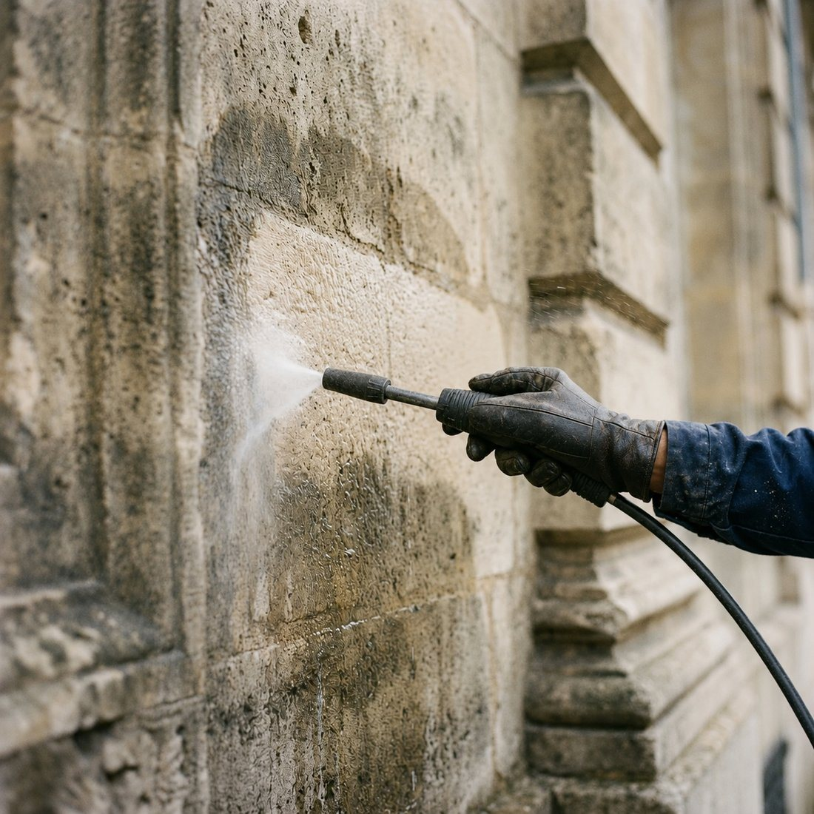
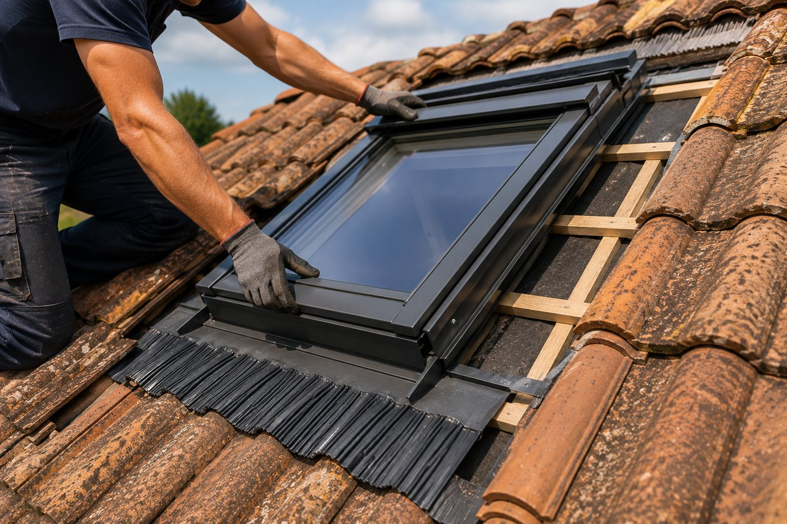
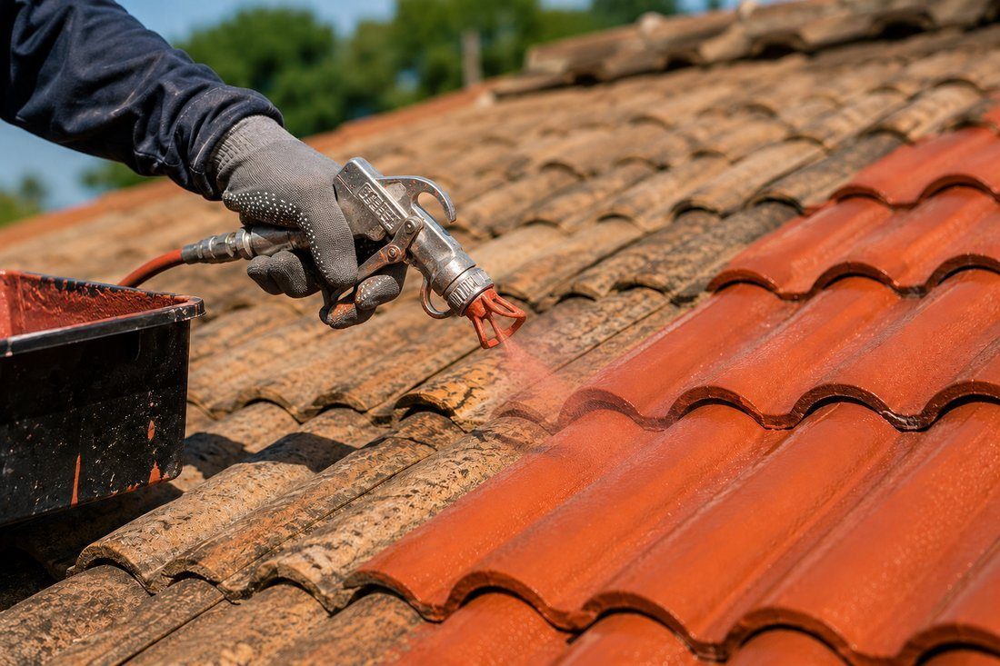

Nos prestations à Villeneuve-de-Berg
- Rénovation et Réparation Toiture à Villeneuve-de-Berg
- Charpente et couverture neuve à Villeneuve-de-Berg
- Nettoyage et rejointement de façade en pierre à Villeneuve-de-Berg
- Création d'ouvertures en mur de pierre à Villeneuve-de-Berg
- Réalisation de murs en pierre à Villeneuve-de-Berg
- Planchers et dallages en béton armé à Villeneuve-de-Berg
- Isolation de toiture et de combles à Villeneuve-de-Berg
- Entretien et Démoussage à Villeneuve-de-Berg
- Travaux de zinguerie à Villeneuve-de-Berg
- Installation et remplacement de Velux à Villeneuve-de-Berg
- Peinture de toiture à Villeneuve-de-Berg

Rénovation et Réparation Toiture
Inspection, diagnostic précis et travaux de remise à neuf pour prolonger la vie de votre toit et assurer son étanchéité.
En savoir plus
Charpente et couverture neuve
Charpente traditionnelle, couverture neuve en tuile canal ou mécanique, écran sous-toiture et finitions de génoise.
En savoir plus
Nettoyage et rejointement de façade en pierre
Nettoyage doux, dégarnissage des joints poreux et rejointement à la chaux des murs en pierre.
En savoir plus
Création d'ouvertures en mur de pierre
Fenêtre, porte ou baie vitrée dans un mur ancien : étaiement, linteau, jambages en pierre et finitions dans les règles de l'art.
En savoir plus
Réalisation de murs en pierre
Murs de clôture, murets, murs de soutènement et restauration de murs anciens en pierre du pays, montés à la chaux ou en pierre sèche.
En savoir plus
Planchers et dallages en béton armé
Dalles, planchers et chapes en béton armé en rénovation : reprise de niveaux, hérisson, isolation et ferraillage dans le bâti ancien.
En savoir plus
Isolation de toiture et de combles
Isolation par l'extérieur en panneaux de toiture Trilatte pendant la réfection, et isolation soufflée des combles perdus.
En savoir plus
Entretien et Démoussage
Nettoyage professionnel, traitement préventif et entretien régulier pour préserver l'intégrité et l'esthétique de votre couverture.
En savoir plus
Travaux de zinguerie
Installation et réparation de gouttières, chéneaux et éléments en zinc pour une évacuation optimale des eaux pluviales et une protection accrue de votre façade.
En savoir plus
Installation et remplacement de Velux
Pose et remplacement de fenêtres de toit Velux pour apporter plus de lumière et améliorer votre confort.
En savoir plus
Peinture de toiture
Redonnez de l'éclat à votre toiture grâce à une peinture professionnelle résistante aux intempéries et aux UV.
En savoir plus